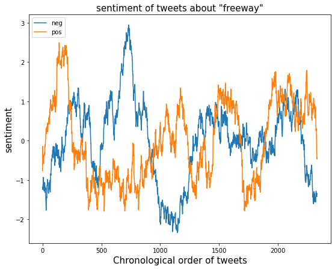
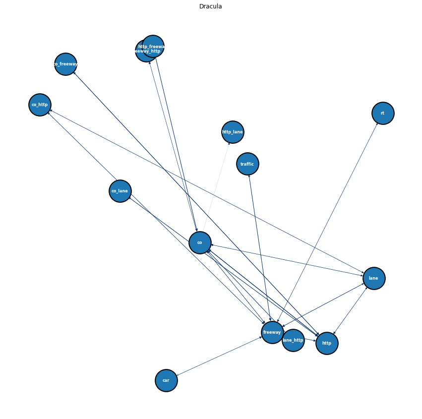

import nltk
import string
from nltk.stem import WordNetLemmatizer
from nltk.stem import PorterStemmer
from nltk.corpus import stopwords
from nltk.tokenize import word_tokenize
from nltk.sentiment import SentimentIntensityAnalyzer
import os
import matplotlib.pyplot as plt
import numpy as np
import pandas as pd
from apyori import apriori
import networkx as nx ARM and Networking
1 ARM and Networking
1.1 Introduction to ARM
Association rule analysis was first proposed to obtain the potential association between different commodities in transactions. This technology uses the expression of set. First, we define item set as \(I=\{i_1,i_2,\cdots,i_p\}\), where each \(i_k\) can be viewed as an item (commodity). Second, we define transaction set as \(D=\{T_1,T_2,\cdots,T_d\}\) where each \(T_k\) is a subset of I. The aim of our analysis is to obtain certain rules from D.
For a single project set, we define support to measure the possibility of the occurrence of the project set. The definition of support is similar to Bayesian probability, which is:
\[support(X)=\frac{\vert \{T_i|X \subseteq T_i\}\vert}{\vert D\vert}\]
The support here can be understood as the possibility of the occurrence of such a project portfolio (commodity portfolio) as X, and it can also be understood as the possibility of such a group of commodities as X becoming complementary products to each other. For rules like \(X \rightarrow Y\), we can calculate the similar supporting value by \(\frac{\vert \{T_i|X \cup Y \subseteq T_i\}\vert}{\vert D\vert}\). This can predict the probability of Y’s commodity combination, based on the condition that X’s combination has been found.
In the algorithm, we set the minimum confidence threshold to give the basic item set, which is to prevent invalid sets, such as single element sets. At the same time, for the second type of rules (transitive rules), we use the maximum support method to generate the most effective association rules. The specific construction method uses the FP tree construction method to generate frequent item sets from the bottom up, sort by decreasing support, and obtain the combination of maximum support that meets the minimum threshold.
1.2 Preparations
In This page, I will use cleaned text data to do the ARM and Networking modeling. The data can be find here:
https://github.com/anly501/anly-501-project-WilliamChuFCB/tree/main/data/cleaned_data
First import necessary packages:
Define some global variables:
#USER PARAM
input_path = 'free_mtr_text_data.csv'
compute_sentiment = True
sentiment = [] #average sentiment of each chunck of text
ave_window_size = 250 #size of scanning window for moving average
#OUTPUT FILE
output='transactions.txt'
if os.path.exists(output): os.remove(output)
#INITIALIZE
lemmatizer = WordNetLemmatizer()
ps = PorterStemmer()
sia = SentimentIntensityAnalyzer()
#ADD MORE
stopwords = stopwords.words('english')
add=['mr','mrs','wa','dr','said','back','could','one','looked','like','know','around','dont']
for sp in add: stopwords.append(sp)Read in the csv file:
df=pd.read_csv("free_mtr_text_data.csv")
freeway_list=list(df.loc[df.label=="freeway","text"])
metro_list=list(df.loc[df.label=="metro","text"])1.3 Data cleaning and sentiment analysis
In this part, I will clean the data and also compute the average sentiment of text data that labeled “freeway” or “metro” in order to compare the sentiment of two groups of tweets.
First define a funtion to further clean the text data and output the average sentiment value of all the tweets about “freeway”.
def read_and_clean(file):
global sentiment
#CLEAN AND LEMMATIZE
keep='0123456789abcdefghijklmnopqrstuvwxy';
new_sentences=[]; vocabulary=[]
for sentence in file:
new_sentence=''
# REBUILD LEMITIZED SENTENCE
for word in sentence.split():
#ONLY KEEP CHAR IN "keep"
tmp2=''
for char in word:
if(char in keep):
tmp2=tmp2+char
else:
tmp2=tmp2+' '
word=tmp2
tmp=lemmatizer.lemmatize(word)
new_word=tmp
#REMOVE WHITE SPACES
new_word=new_word.replace(' ', '')
#BUILD NEW SENTANCE BACK UP
if( new_word not in stopwords):
if(new_sentence==''):
new_sentence=new_word
else:
new_sentence=new_sentence+','+new_word
if(new_word not in vocabulary): vocabulary.append(new_word)
#SAVE (LIST OF LISTS)
new_sentences.append(new_sentence.split(","))
#SIA
if(compute_sentiment):
s=sia.polarity_scores(new_sentence.replace(',',' '))
sentiment.append([s['neg'],s['neu'],s['pos'],s['compound']])
#SAVE SENTANCE TO OUTPUT FILE
if(len(new_sentence.split(','))>2):
f = open(output, "a")
f.write(new_sentence+"\n")
f.close()
sentiment=np.array(sentiment)
print("TOTAL AVERAGE SENTIMENT:",np.mean(sentiment,axis=0))
print("VOCAB LENGTH",len(vocabulary))
return new_sentences
transactions=read_and_clean(freeway_list)
print(transactions[0:5])TOTAL AVERAGE SENTIMENT: [ 0.10607972 0.71527322 0.17864706 -0.01102825]
VOCAB LENGTH 7949
[['boenau', 'rfsdfhsfbhwsfgb', 'least', 'ca', 'expressway', 'might', 'limited', 'access', 'still', 'grade', 'inte', 'http', 'co', 'dibmsr9b5b'], ['acakamadu', 'sudden', 'urge', 'go', 'san', 'jose', 'talk', 'cultural', 'impact', 'song', 'unfortunately', 'san', 'jo', 'http', 'co', 'nujnntbhx0'], ['alinaaai', 'yes', 'girl', 'freeway', 'system', 'wack', 'lol'], ['multi', 'adsbx', 'circling', 'alert', 'time', 'sat', 'dec', '10', '18', '26', '41', '2022', 'n962ms', 'likely', 'circling', 'fl23', '4nm', 'http', 'co', 'dfrvrvjiqt'], ['ghettosmosh', 'almost', 'crashed', 'fucking', 'whip', 'freeway', 'listening', 'legend', 'plug', 'feel', 'owed', 'methinks']]According to the average sentiment vector, negative coefficient is 0.11 while positive coefficient is 0.18. At the same time, neutral coefficient is 0.72, which is much higher than others.
Then compute the sentiment vector of tweets about “metro”
sentiment = []
transactions1=read_and_clean(metro_list)
print(transactions1[0:5])TOTAL AVERAGE SENTIMENT: [0.06102724 0.8457798 0.0931941 0.06118218]
VOCAB LENGTH 4436
[['downed', 'plonk', 'calais', 'bangkok', 'spanish', 'language', 'tickle', 'ear', 'baroque', 'least', 'metro', 'http', 'co', 'tnoj5k3fg'], ['rt', 'lolita', 'tnie', 'railway', 'okaying', 'traffic', 'amp', 'power', 'block', 'bengaluru', 'metro', 'start', 'process', 'erecting', 'open', 'web', 'girder', '65'], ['rt', 'metroopinion', 'another', 'knockout', 'defeat', 'call', 'growing', 'sack', 'gareth', 'southgate', 'evolution', 'revolution', 'solution'], ['rt', 'metrouk', 'breaking', 'reported', 'national', 'grid', 'fired', 'two', 'emergency', 'use', 'coal', 'generator', 'amid', 'cold', 'weather', 'http', 'co'], ['rt', 'mahilmass', 'varisu', 'metro', 'train', 'promotion', 'http', 'co', '2elrimnwar']]From this result, we can find that the size relation of negative, positive and neutral coefficients is the same as “freeway”. However, the negative and positive coefficients are smaller while neutral coefficent gets even larger. This means that people include more emotion to the tweets about “freeway” than about “metro”. This possibly because people may encounter traffic jams and car accidents on the freeway but not in metro.
Next, use moving average plot to visualize the sentiment value among all the tweets about “freeway”:
def moving_ave(y,w=100):
l=len(y)
mean = []
i=0
while(i+w<=l):
mean.append(np.mean(y[i:i+w]))
i=i+1
return mean
neg=moving_ave(sentiment[:,0], ave_window_size)
pos=moving_ave(sentiment[:,2], ave_window_size)
neg=(neg-np.mean(neg))/np.std(neg)
pos=(pos-np.mean(pos))/np.std(pos)
fig,axes=plt.subplots(1,1,figsize=(9,7))
FS=15
plt.plot(neg, label = 'neg')
plt.plot(pos, label = 'pos')
plt.legend(loc='upper left')
plt.title('sentiment of tweets about "freeway"', fontsize=FS)
plt.xlabel('Chronological order of tweets', fontsize=FS)
plt.ylabel('sentiment', fontsize=FS)
plt.show()
We can see that the average sentiment fluctuates by time.
1.4 ARM and networking modeling
First define a function to re-format the output:
def reformat_results(results):
#CLEAN-UP RESULTS
keep=[]
for i in range(0,len(results)):
# print("=====================================")
# print(results[i])
# print(len(list(results[i])))
for j in range(0,len(list(results[i]))):
# print(results)
if(j>1):
for k in range(0,len(list(results[i][j]))):
if(len(results[i][j][k][0])!=0):
#print(len(results[i][j][k][0]),results[i][j][k][0])
rhs=list(results[i][j][k][0])
lhs=list(results[i][j][k][1])
conf=float(results[i][j][k][2])
lift=float(results[i][j][k][3])
keep.append([rhs,lhs,supp,conf,supp*conf,lift])
# keep.append()
if(j==1):
supp=results[i][j]
return pd.DataFrame(keep, columns =["rhs","lhs","supp","conf","supp x conf","lift"])Then define a utility function to convert to NetworkX object:
def convert_to_network(df):
print(df)
#BUILD GRAPH
G = nx.DiGraph() # DIRECTED
for row in df.iterrows():
# for column in df.columns:
lhs="_".join(row[1][0])
rhs="_".join(row[1][1])
conf=row[1][3]; #print(conf)
if(lhs not in G.nodes):
G.add_node(lhs)
if(rhs not in G.nodes):
G.add_node(rhs)
edge=(lhs,rhs)
if edge not in G.edges:
G.add_edge(lhs, rhs, weight=conf)
return GDefine another function to plot the NetworkX object:
def plot_network(G):
#SPECIFIY X-Y POSITIONS FOR PLOTTING
pos=nx.random_layout(G)
#GENERATE PLOT
fig, ax = plt.subplots()
fig.set_size_inches(15, 15)
#assign colors based on attributes
weights_e = [G[u][v]['weight'] for u,v in G.edges()]
#SAMPLE CMAP FOR COLORS
cmap=plt.cm.get_cmap('Blues')
colors_e = [cmap(G[u][v]['weight']*10) for u,v in G.edges()]
#PLOT
nx.draw(
G,
edgecolors="black",
edge_color=colors_e,
node_size=2000,
linewidths=2,
font_size=8,
font_color="white",
font_weight="bold",
width=weights_e,
with_labels=True,
pos=pos,
ax=ax
)
ax.set(title='Dracula')
plt.show()Train the ARM model and print the result:
print("Transactions:",pd.DataFrame(transactions))
results = list(apriori(transactions, min_support = 0.05, min_confidence=0.05, min_length=1, max_length=5))
pd_results=reformat_results(results)
print(len(results))Transactions: 0 1 2 3 4 5 \
0 boenau rfsdfhsfbhwsfgb least ca expressway might
1 acakamadu sudden urge go san jose
2 alinaaai yes girl freeway system wack
3 multi adsbx circling alert time sat
4 ghettosmosh almost crashed fucking whip freeway
... ... ... ... ... ... ...
2579 20 east atlanta see neighborhood people
2580 ever since first bmw 90 325is
2581 cruising exact freeway 1930s german toward
2582 briannawu even walking grocery store across
2583 congestion n1 inbound elevated freeway expect
6 7 8 9 ... 12 \
0 limited access still grade ... co
1 talk cultural impact song ... jo
2 lol None None None ... None
3 dec 10 18 26 ... n962ms
4 listening legend plug feel ... None
... ... ... ... ... ... ...
2579 priced eliminating interchange construct ... f0kmfq5tiv
2580 obsessed shadow car creates ... co
2581 fascism democrat setting obstacle ... 7tveaat5g
2582 street requires playing game ... four
2583 delay booefreeroads http co ... None
13 14 15 16 17 18 19 20 \
0 dibmsr9b5b None None None None None None None
1 http co nujnntbhx0 None None None None None
2 None None None None None None None None
3 likely circling fl23 4nm http co dfrvrvjiqt None
4 None None None None None None None None
... ... ... ... ... ... ... ... ...
2579 None None None None None None None None
2580 wa9jva0cwi None None None None None None None
2581 None None None None None None None None
2582 http co 0w9iudhvv None None None None None
2583 None None None None None None None None
21
0 None
1 None
2 None
3 None
4 None
... ...
2579 None
2580 None
2581 None
2582 None
2583 None
[2584 rows x 22 columns]
19G=convert_to_network(pd_results)
plot_network(G) rhs lhs supp conf supp x conf \
0 [car] [freeway] 0.053019 0.706186 0.037441
1 [freeway] [car] 0.053019 0.067289 0.003568
2 [co] [freeway] 0.323529 0.668265 0.216204
3 [freeway] [co] 0.323529 0.410609 0.132844
4 [co] [http] 0.483746 0.999201 0.483359
5 [http] [co] 0.483746 0.996810 0.482203
6 [co] [lane] 0.054954 0.113509 0.006238
7 [lane] [co] 0.054954 0.706468 0.038823
8 [freeway] [http] 0.323916 0.411100 0.133162
9 [http] [freeway] 0.323916 0.667464 0.216203
10 [freeway] [lane] 0.068498 0.086935 0.005955
11 [lane] [freeway] 0.068498 0.880597 0.060320
12 [freeway] [rt] 0.077786 0.098723 0.007679
13 [rt] [freeway] 0.077786 0.661184 0.051431
14 [freeway] [traffic] 0.119195 0.151277 0.018031
15 [traffic] [freeway] 0.119195 0.950617 0.113309
16 [http] [lane] 0.055341 0.114035 0.006311
17 [lane] [http] 0.055341 0.711443 0.039372
18 [co] [freeway, http] 0.323142 0.667466 0.215687
19 [freeway] [co, http] 0.323142 0.410118 0.132526
20 [http] [co, freeway] 0.323142 0.665869 0.215171
21 [co, freeway] [http] 0.323142 0.998804 0.322756
22 [co, http] [freeway] 0.323142 0.668000 0.215859
23 [http, freeway] [co] 0.323142 0.997611 0.322370
24 [co] [http, lane] 0.054954 0.113509 0.006238
25 [http] [co, lane] 0.054954 0.113238 0.006223
26 [lane] [co, http] 0.054954 0.706468 0.038823
27 [co, http] [lane] 0.054954 0.113600 0.006243
28 [co, lane] [http] 0.054954 1.000000 0.054954
29 [lane, http] [co] 0.054954 0.993007 0.054569
lift
0 0.896259
1 0.896259
2 0.848132
3 0.848132
4 2.058959
5 2.058959
6 1.459243
7 1.459243
8 0.847116
9 0.847116
10 1.117614
11 1.117614
12 0.839145
13 0.839145
14 1.206481
15 1.206481
16 1.466003
17 1.466003
18 2.060612
19 0.847796
20 2.058141
21 2.058141
22 0.847796
23 2.060612
24 2.051103
25 2.060606
26 1.460410
27 1.460410
28 2.060606
29 2.051103 